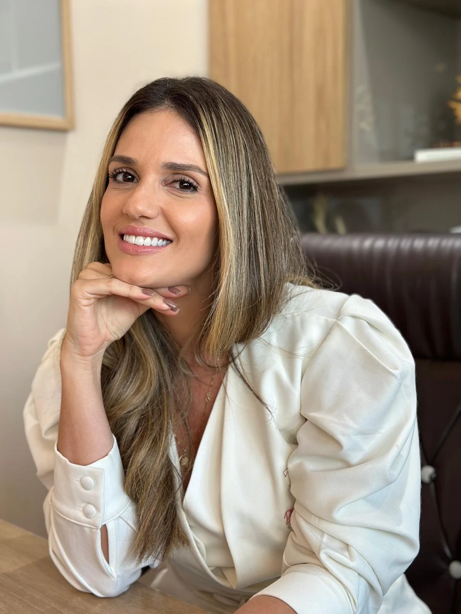
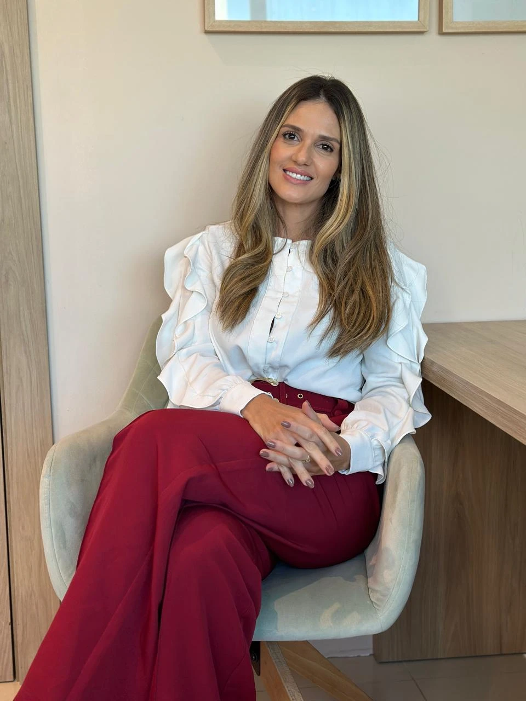
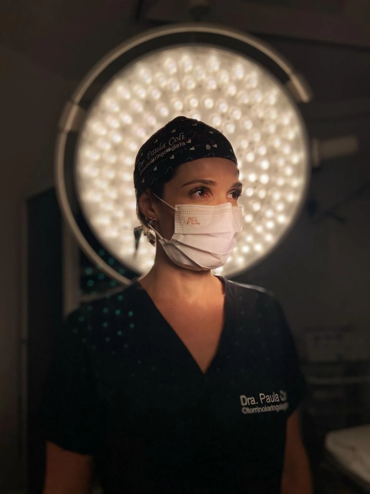
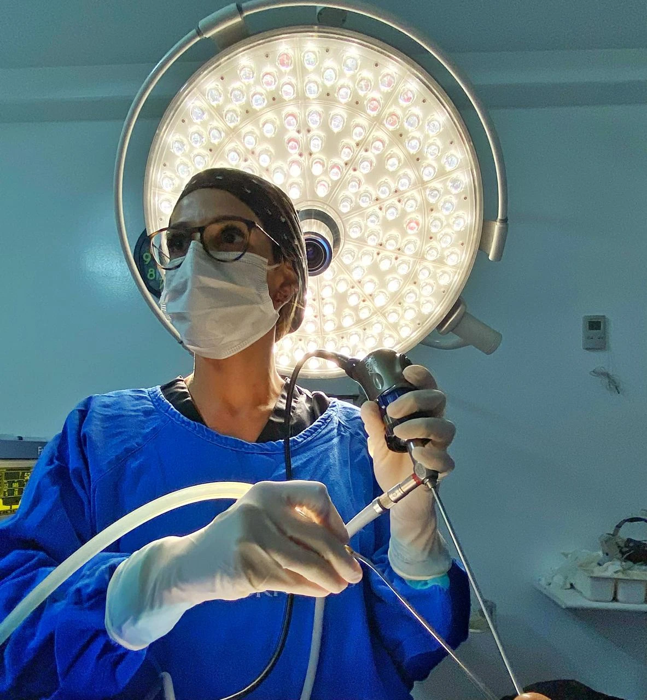

Cuidado especializado para a saúde do nariz, ouvido, garganta e respiração, unindo precisão técnica, tecnologia e atendimento humanizado.


A Dra. Paula Coli é especialista no diagnóstico e tratamento clínico e cirúrgico das disfunções que afetam os ouvidos, nariz, garganta e vias respiratórias. Seu compromisso é oferecer um atendimento de excelência técnica aliado a uma escuta empática e atenta às necessidades de cada paciente.
Buscando sempre as condutas mais atualizadas na otorrinolaringologia, ela atua de forma preventiva e resolutiva, promovendo a qualidade de vida, o bem-estar e a reabilitação das funções fundamentais de comunicação, respiração e equilíbrio de adultos e crianças.
Escuta ativa com consultas detalhadas e tempo dedicado a você.
Exames modernos e tecnologia para identificar a causa exata das disfunções.
Uma trajetória pautada pela excelência acadêmica e treinamento prático intensivo em centros de referência nacional.
Instituto Jurado • São Paulo/SP
Duração de 1 ano. Especialização focada em técnicas avançadas de rinoplastia estética e funcional.
Instituto Felippu • São Paulo/SP
Duração de 2 anos. Subespecialização avançada em Cirurgia Endoscópica Nasal e Cirurgias de Base de Crânio.
Instituto do Sono • São Paulo/SP
Duração de 1 ano. Diagnóstico e tratamento de ronco, apneia e distúrbios respiratórios do sono.
AMB e ABORL-CCF
Certificação nacional chancelada pela Associação Médica Brasileira e Associação Brasileira de Otorrinolaringologia e Cirurgia Cérvico-Facial.
Pró-Otorrino / Policlínica de Botafogo • Rio de Janeiro/RJ
Duração de 3 anos. Residência médica integral com foco em clínica otorrinolaringológica, urgências e técnicas cirúrgicas da especialidade. Concluído em janeiro de 2018.
Faculdade de Medicina de Petrópolis (FMP) • Petrópolis/RJ
Graduação plena em Medicina com duração de 6 anos. Concluído em janeiro de 2014.
Hospital Otorrinos (Feira de Santana/BA) & Santa Casa da Bahia (Hospital Santa Izabel / Salvador/BA)
Preceptora responsável pelo ensino clínico-cirúrgico de novos médicos residentes na especialidade de otorrinolaringologia.
Clínica Sermeca (Salvador/BA), Clínica Clioc (Salvador/BA) e Hospital São Matheus (Feira de Santana/BA)
Atendimento clínico especializado, exames diagnósticos e realização de procedimentos cirúrgicos.
Hospital CEMA, Instituto Felippu, Hospital Rubem Berta, Hospital São Luiz Itaim e Vila Nova Star (Rede D'Or)
Atendimento em pronto-socorro de otorrinolaringologia, plantões de urgência, ambulatório e participação ativa em equipes cirúrgicas de alta complexidade.
Policlínica de Botafogo, Clínica CEO, Otogrupo, Hospital Pasteur, Hospital Copa D'Or, Hospital SMH Beneficência Portuguesa
Experiência consolidada em atendimentos de urgência e emergência, sobreavisos hospitalares e equipes cirúrgicas da especialidade.
Clínica Otorhinus e Hospital Português da Bahia
Consultas eletivas e urgências otorrinolaringológicas integrando corpo clínico de excelência no estado.


Todas as condutas e procedimentos clínicos e cirúrgicos são baseados estritamente em evidências científicas e ética médica.
Cada paciente recebe um plano terapêutico exclusivo, ajustado para sua rotina, anatomia e metas de reabilitação.
Um ambiente de consultório planejado nos mínimos detalhes para garantir seu conforto físico e tranquilidade mental.
Nossa equipe, liderada pela secretária Tífany Lavínia, terá o imenso prazer de lhe atender, esclarecer dúvidas sobre convênios, exames, cirurgias e agendar seu melhor horário.